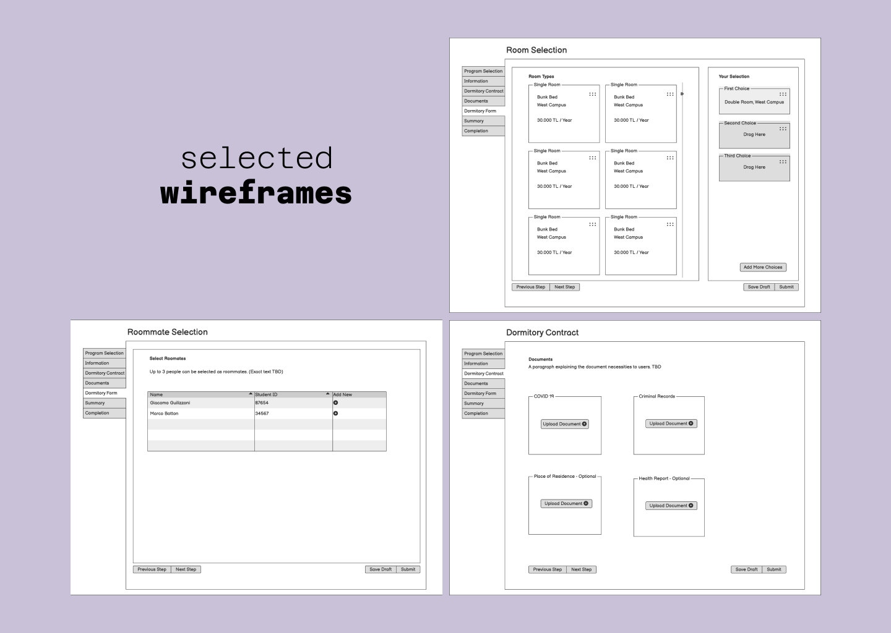
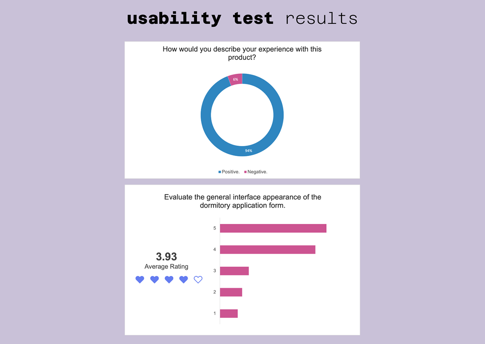

Portfolio Details
Project Information
- Category: UX Research, UX Design, UI Design, Usability Testing
- Client: Koç Dormitory
- Project URL: Figma
Project Overview
From May to July 2023, as part of the larger KUHub campus management platform project, I focused on enhancing the dormitory application process for students as a part of the Enterprise Applications Agile Team.
We worked in a scrum setting using Jira as our task tool and had daily meetings with product owners and developers.
As the UX & UI Designer, I provided the user flow, and high-fidelity prototype for the project after meeting the stakeholders and interviewing the users. I also conducted usability and satisfaction tests during the design process.
Project Goal
Improve the dormitory application process for students by enhancing usability, and reducing cognitive load compared to the previous product.
My Role
I owned the end-to-end UX design for this project, leading research, strategy, and execution. I conducted user interviews, surveys, and usability tests to identify pain points, then translated insights into wireframes and high-fidelity designs in Figma. I ensured WCAG 2.1 accessibility compliance and collaborated with developers and product owners in an Agile team to deliver a responsive, user-centred solution.
UX/UI Methodologies & Techniques
- Client & User Interviews (UX Research)
- User flow
- Design systems
- Cross-team meetings
- Usability testing
- UX audit
- Wireframing
- Prototyping
Tools I Used
- Figma & Figjam
- Balsamiq
- Miro
- Microsoft Forms
UX Design Process
Once the user flow was finalised, I began developing wireframes in iterative phases. During this process, I assessed the product’s limitations and identified opportunities for innovation.
The initial wireframes were then presented to a select group of users as part of a UX audit, allowing me to gather valuable feedback. This early user input made the UI design phase much more effective, ensuring the final product was both user-friendly and aligned with our goals.
Prototyping
Using Figma I made a high-fidelity prototype to show the user's interaction with the application.
The existing KUHub UI kit and Metronic as a framework made the process easier. I incorporated form steppers in the project for a smoother application.
Testing & Iteration
Internal usability testing of components and patterns
Accessibility testing and adjustments
Feedback loops from designers and developers
Iterative updates based on real-world implementation
Key Metrics
The Challenge
Ensuring a swift dormitory application process for various student types.
The Difficulties
I proposed displaying photos of dorm rooms to help students make more informed decisions. However, the development team later rejected this idea due to performance concerns and time constraints, as they couldn't implement an efficient solution before the expected release date.
Students with dormitory scholarships have limited room options. To reduce cognitive load, I proposed displaying only the rooms they were eligible to select. However, due to time constraints, the product owners decided to postpone this feature for a future version.
Some of the written content was unclear. I suggested rewriting certain documents and renaming sections—such as "Dormitory Preference Priority"—to make them more user-friendly, as the original phrasing felt too administrative. However, the client preferred to keep some familiar terms unchanged. Despite this, most of my text suggestions were accepted.
The Testing
During this design process, I conducted interviews with users at the start of the project. I conducted UX Audits during the wireframing and prototyping stages. Usability tests were done throughout the design process with a user satisfaction survey after launch.
During the usability tests, we also discovered that selecting rooms with a drag & drop interaction didn't match the users' needs and there were bugs on the mobile version. I revised the design for a better user experience and developers fixed the bugs.
Overall user experience of the product: 94% positive
General rating of the interface: 3.93/5.00
The Critique
The page where students could read every necessary information for the dormitory application process. Sidebar on the left had two main sections and did not provide enough information.
The room selection page where students rank the rooms they want. Numbering on the left often would be confused as the actual ranking. While selecting 3 options were enough, this UI made students feel like they have to rank every room type.
Comments from the Users
- "Using the drag-and-drop feature added variety to my otherwise monotonous selection."
- "The progress tab on the left was very useful; in the old system, I didn’t know where I was."
- "The information and room options were clear."
- "It was much clearer than the old system, and seeing my progress was great. The drag-and-drop system was much better than selecting room numbers one by one."
- "The room selection was clear and well-organised, making it easy to complete."
- "The lack of photos for all rooms made the selection process more difficult."
- "The lack of additional information for scholarship students and the insufficient visual and textual details about dorms and rooms made the process challenging."
- "I switched to a computer because I had difficulty dragging room options on the mobile app."
Final Takeaway
With more time and resources, I would have conducted additional usability tests and incorporated more of my proposed features into the product. While some improvements were planned for future versions, room photos are still missing.
This project gave me valuable insights into the product development cycle and significantly strengthened my collaboration skills. I also became more confident in advocating for my ideas and designs—now, I hear more “yes” and “we will do it” than before.